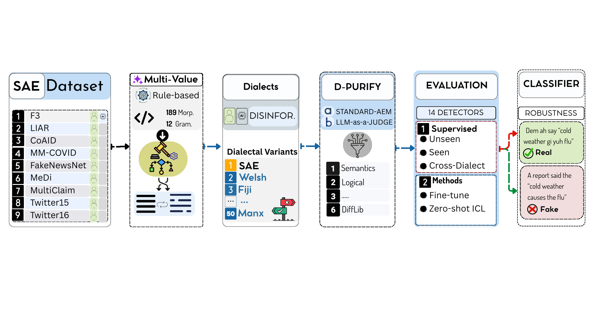

DIA-HARM: Harmful Content Detection Robustness Across 50 English Dialects
Code & Data contains the DIA-HARM framework, D3 corpus (195K+ dialectal disinformation samples across 50 English dialects), D-PURIFY validation pipeline, dialect transformation outputs, and evaluation tools.
Abstract
Harmful content detectors—particularly disinformation classifiers—are predominantly developed and evaluated on Standard American English (SAE), leaving their robustness to dialectal variation unexplored. We present DIA-HARM, the first benchmark for evaluating disinformation detection robustness across 50 English dialects spanning U.S., British, African, Caribbean, and Asia-Pacific varieties. Using Multi-VALUE's linguistically-grounded transformations, we introduce D3 (Dialectal Disinformation Detection), a corpus of 195K+ samples derived from established disinformation benchmarks. Our evaluation of 16 detection models reveals systematic vulnerabilities: human-written dialectal content degrades detection by 1.4–3.6% F1, while AI-generated content remains stable. Fine-tuned transformers substantially outperform zero-shot LLMs (96.6% vs. 78.3% best-case F1), with some models exhibiting catastrophic failures exceeding 33% degradation on mixed content. Cross-dialectal transfer analysis across 2,450 dialect pairs shows that multilingual models (mDeBERTa: 97.2% average F1) generalize effectively, while monolingual models like RoBERTa and XLM-RoBERTa fail on dialectal inputs. These findings demonstrate that current disinformation detectors may systematically disadvantage hundreds of millions of non-SAE speakers worldwide. We release the DIA-HARM framework, D3 corpus, and evaluation tools.
Key Highlights
50
English Dialects
U.S., British, African, Caribbean, and Asia-Pacific varieties
195K+
Samples in D3 Corpus
Derived from 9 established SAE disinformation benchmarks
16
Detection Models
10 fine-tuned + 5 zero-shot LLMs + 1 in-context learning
189
Morphosyntactic Rules
12 grammatical categories from eWAVE atlas via Multi-VALUE
2,450
Dialect Pairs
Cross-dialectal transfer analysis for generalization
97.2%
Best Avg F1
mDeBERTa: best cross-dialect generalization
Research Questions
| RQ | Question | Key Finding |
|---|---|---|
| SQ1 | How robust are SAE-trained detectors when applied to unseen dialectal inputs? | Human-written dialectal content degrades detection by 1.4–3.6% F1; AI-generated content remains stable |
| SQ2 | Does dialect-aware training improve robustness? | Fine-tuned transformers (96.6% F1) substantially outperform zero-shot LLMs (78.3% best-case F1) |
| SQ3 | How well does performance transfer across 2,450 dialect pairs? | Multilingual models (mDeBERTa: 97.2% avg F1) generalize; monolingual models fail on dialectal inputs |
| SQ4 | Which model architectures are most robust to dialectal variation? | Zero-shot LLMs show up to 27% degradation; some exhibit catastrophic failures exceeding 33% |
Methodology

DIA-HARM Framework. End-to-end pipeline for evaluating disinformation detection robustness across 50 English dialects using Multi-VALUE transformations, D-PURIFY quality validation, and comprehensive model evaluation.
Multi-VALUE Dialect Transformations
DIA-HARM leverages Multi-VALUE's linguistically-grounded, rule-based transformations to convert Standard American English text into 50 dialectal variants. The transformation system applies 189 morphosyntactic rules spanning 12 grammatical categories derived from the electronic World Atlas of Varieties of English (eWAVE). These rules capture authentic dialectal features—not errors, but legitimate linguistic systems—including variations in verb morphology, negation patterns, pronoun usage, article systems, and syntactic structures.
D3: Dialectal Disinformation Detection Corpus
The D3 corpus is constructed by transforming 9 established SAE disinformation benchmarks into 50 dialectal variants, yielding 195K+ samples. Source benchmarks span diverse disinformation types including fact-checked claims, propaganda, satire, and AI-generated text. Each sample preserves the original semantic content while altering morphosyntactic structure according to dialect-specific rules, creating natural perturbations that test detector robustness without changing the underlying truthfulness of the content.
D-PURIFY: Quality Validation Pipeline
All dialectal transformations undergo quality validation through D-PURIFY, ensuring that transformed samples faithfully represent target dialect features while preserving semantic content. The pipeline filters out malformed transformations, verifies grammatical category coverage, and validates that dialect-specific rules are correctly applied. This ensures that performance differences across dialects reflect genuine detector vulnerabilities rather than transformation artifacts.
Detection Models Evaluated
DIA-HARM evaluates 16 detection models spanning three paradigms to provide a comprehensive assessment of dialectal robustness:
Fine-Tuned Encoders (10)
- BERT
- RoBERTa
- DeBERTa-v3
- mDeBERTa-v3
- XLM-RoBERTa
- ELECTRA
- DistilBERT
- ALBERT
- S-BERT (LaBSE)
- Longformer
Zero-Shot LLMs (5)
- GPT-4o
- GPT-4o-mini
- Gemini 2.0 Flash
- Llama 3.3 70B
- Qwen 2.5 72B
In-Context Learning (1)
- Gemini 2.0 Flash (3-shot)
Key Result
mDeBERTa-v3 achieves the best cross-dialect generalization with 97.2% average F1 across all 50 dialects.
Key Findings
Systematic Vulnerability
Human-written dialectal content degrades detection by 1.4–3.6% F1 across fine-tuned models. While this seems modest, it translates to thousands of missed harmful items at scale, systematically disadvantaging non-SAE speakers.
LLM Fragility
Zero-shot LLMs exhibit up to 27% degradation on dialectal inputs, with some models showing catastrophic failures exceeding 33% on mixed human-written and AI-generated content.
Multilingual Advantage
Multilingual pre-trained models (mDeBERTa: 97.2% avg F1) generalize effectively across dialects, while monolingual models like RoBERTa and XLM-RoBERTa fail on dialectal inputs.
Cross-Dialect Transfer
Analysis of 2,450 dialect pairs reveals that fine-tuned transformers (96.6% F1) substantially outperform zero-shot LLMs (78.3% best-case F1), highlighting the importance of dialect-aware training.
Dialect Coverage
DIA-HARM covers 50 English dialect varieties from diverse geographic and sociolinguistic backgrounds:
Americas
- Appalachian English
- Chicano English
- Colloquial American English
- Newfoundland English
- Ozark English
- SE American Enclave Dialects
- Earlier/Rural/Urban AAVE
- Bahamian English
- Jamaican English
Asia-Pacific
- Australian / Vernacular English
- New Zealand English
- Singapore English (Singlish)
- Hong Kong English
- Indian English
- Malaysian English
- Philippine English
- Pakistani English
- Sri Lankan English
- Fiji English (Acrolectal/Basilectal)
British Isles
- Channel Islands English
- East Anglian English
- English (North/Southeast/Southwest)
- Irish English
- Manx English
- Maltese English
- Orkney & Shetland English
- Scottish English
- Welsh English
Africa
- Aboriginal English
- Black South African English
- Cameroon English
- Cape Flats English
- Ghanaian English
- Indian South African English
- Kenyan English
- Liberian Settler English
- Nigerian English
- Tanzanian English
- Ugandan English
- White South African English
- White Zimbabwean English
Atlantic
- Falkland Islands English
- St Helena English
- Tristan da Cunha English
Citation
Paper currently under review (2026). Citation will be provided upon acceptance.